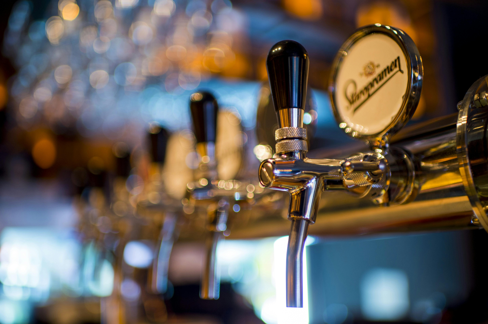
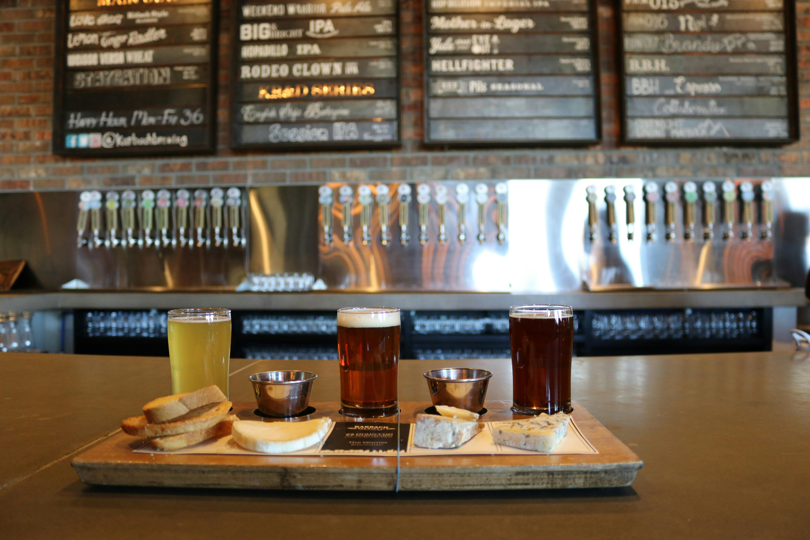
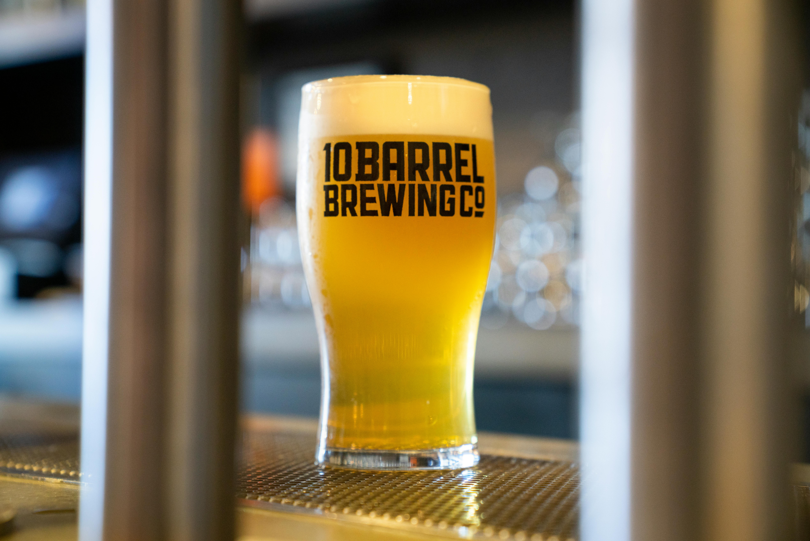

There is an undeniable romance to brewing a stout. It evokes images of damp, cobblestone streets, roaring hearths, and a pint glass filled with an impenetrable void of black liquid crowned with a creamy, tan head. While hazy IPAs rely on massive dry-hop additions and crisp lagers demand surgical temperature control, a great stout is born in the kiln. It is a celebration of the maltster's art and the brewer's restraint.
At BrewSync, our flagship Ironwork Stout has become a staple of the winter rotation. But getting that perfect balance of dark chocolate, fresh espresso, and subtle dark fruit didn't happen overnight. It took months of dialing in the exact ratio of roasted barley to chocolate malt. Today, we're pulling back the curtain on the science behind the shadows.
The Alchemy of the Kiln
When barley is harvested, it is pale and starchy. To make it usable for brewing, it must be malted (steeped, germinated, and dried). The magic happens during the drying phase in the kiln. When barley is roasted at high temperatures, it undergoes the Maillard reaction—the exact same chemical process that browns a steak, sears a marshmallow, or bakes a loaf of bread.

Pushing the malt even further introduces pyrolysis, creating the deeply blackened, highly roasted kernels that give stout its signature opacity and dry, coffee-like astringency. In the brewing world, we measure this color using the Lovibond scale (°L). While a standard base malt might sit at 2-3°L, our roasted barley tips the scales at a staggering 500°L.
"The secret to a truly great stout isn't just throwing in the darkest malt you can find. It's about layering different roasting levels—from pale biscuit to scorched earth—to create a symphony of complex sugars."
The Dublin Effect: Why Water Matters
You can't talk about stouts without talking about water chemistry. Have you ever wondered why the most famous stouts in the world originated in cities like Dublin and London? It all comes down to the municipal water supply.
Dark, highly roasted malts are incredibly acidic. If you try to mash a heavy stout grain bill using soft water (like the water found in Pilsen, perfect for light lagers), the pH of the mash will plummet. This results in a beer that tastes thin, harsh, and unpleasantly acrid.

Dublin water is notoriously hard, packed with bicarbonates (essentially dissolved chalk). This alkalinity acts as a buffer, neutralizing the harsh acids of the roasted barley and allowing the smooth chocolate and coffee flavors to shine through. Here at BrewSync, we use reverse osmosis water and carefully build our water profile back up with calcium carbonate to perfectly mimic historic stout brewing waters.
Balancing the Mash
The danger of highly roasted malts is that they can quickly overpower the palate. To counter this intense bitterness, we use a rich, bready Maris Otter base malt, heavily supplemented with flaked oats.
The oats are absolutely crucial. Because they are unmalted, they contribute high levels of beta-glucans and proteins. These compounds build a silky, viscous mouthfeel that coats the palate and rounds off the sharp edges of the roasted barley. We also mash at a slightly higher temperature (around 156°F) to leave behind unfermentable complex sugars, ensuring the final beer retains a comforting residual sweetness.
The Ironwork Grain Bill Breakdown
- Base: Maris Otter (70%) - Provides a rich, biscuit-like foundation.
- Body: Flaked Oats (15%) - Adds that signature velvety texture.
- Color & Aroma: Chocolate Malt (10%) - Brings smooth cocoa and nutty flavors.
- The Bite: Roasted Barley (5%) - Delivers the deep black color and espresso snap.
The Yeast Equation
Once the sweet, pitch-black wort is boiled and chilled, we introduce the final variable: yeast. For the Ironwork Stout, we opt for a classic English Ale strain. This specific yeast provides moderate attenuation (meaning it doesn't eat every single sugar available), leaving behind just enough body to support the malt. Furthermore, it produces subtle, fruity esters—think dark cherry and plum—that perfectly complement the chocolate notes of the grain.
Pouring the Perfect Pint
Once fermentation is complete, we condition the stout for four weeks. This resting period allows the harsher roasted notes to mellow and integrate. Finally, it's kegged and pushed through our draft lines using a specialized nitrogen gas blend (75% Nitrogen, 25% CO2), rather than straight CO2.

Nitrogen is largely insoluble in liquid compared to CO2. When the beer is forced through the tiny holes of the restrictor plate inside our stout faucets, the nitrogen is knocked violently out of solution. This creates the mesmerizing cascading effect in the glass and the thick, pillowy head that stout lovers crave.
The Ironwork Stout is currently pouring in the taproom. We recommend letting it warm up just a few degrees in the glass before your first sip—the complex chocolate and coffee notes really open up at around 50°F. Cheers!

Marcus Vance
Head BrewmasterMarcus is the Head Brewmaster at BrewSync with over 15 years of experience in the craft beer industry. When he isn't obsessing over water chemistry and malt profiles, he is usually out hiking the local trails with his dog, Barley.